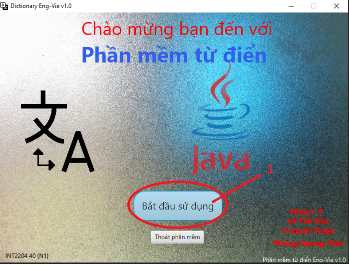
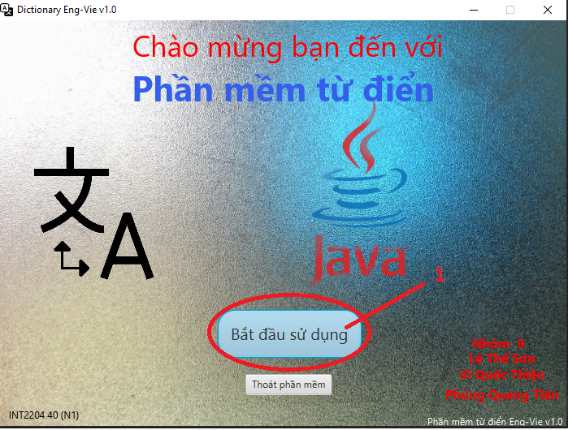
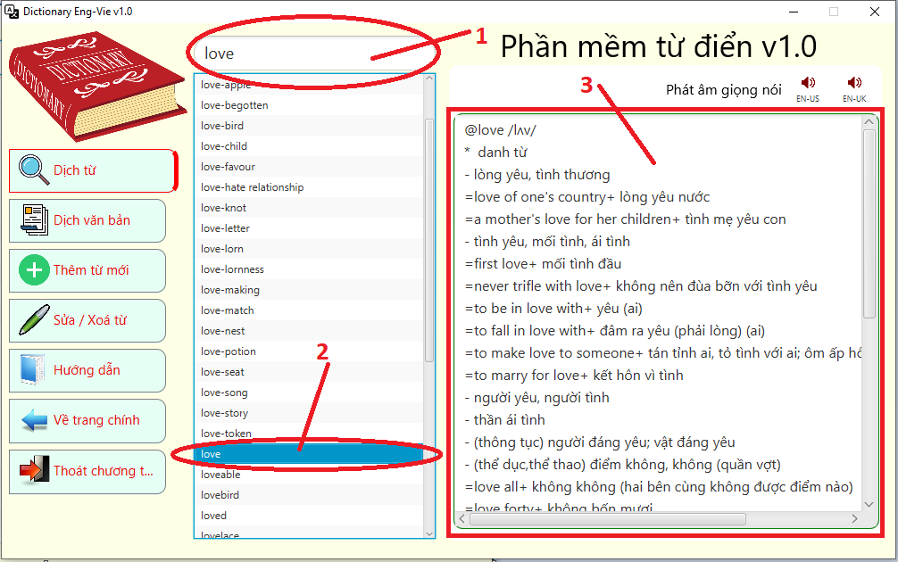
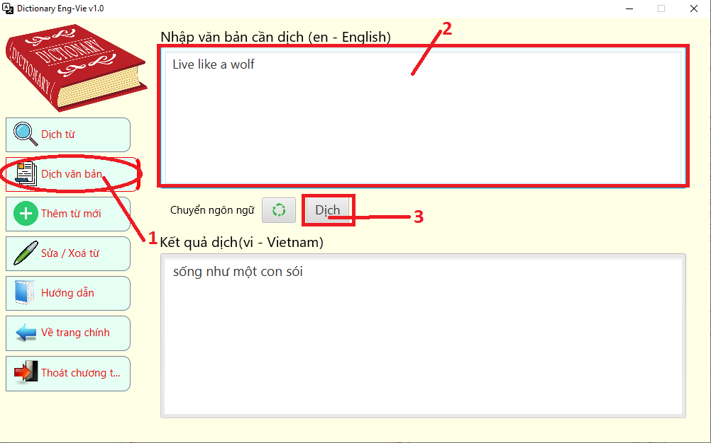
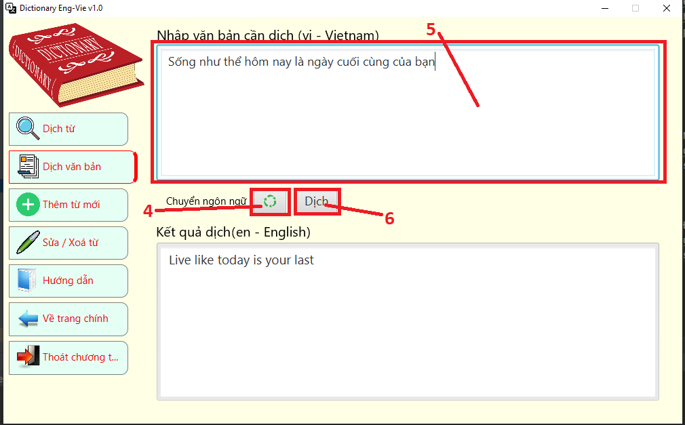
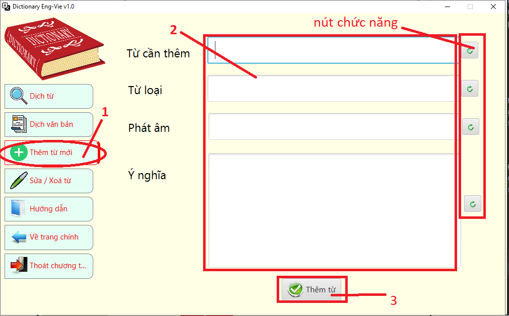
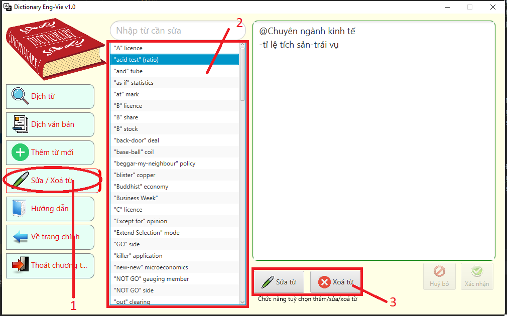
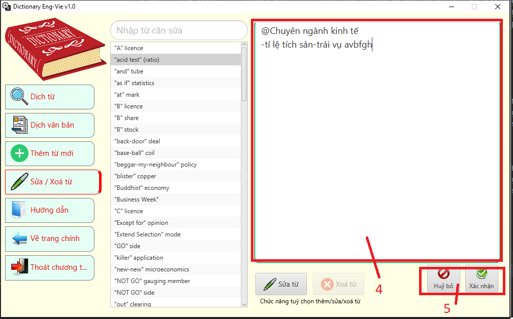

1. Khi khởi động phần mềm, nhấn nút BẮT ĐẦU để bắt đầu sử dụng
2. Thoát phần mềm nếu không sử dụng.

2. Thoát phần mềm nếu không sử dụng.

Chức năng 1: Tìm từ và dịch từ - nguồn dữ liệu từ điển StarDict convert sang MySQL.
- 1. Người dùng thực hiện nhập từ vào ô tìm kiếm
- 2. Người dùng tiến hành chọn từ ở danh sách hiển thị
- 3. Nghĩa của từ sẽ được hiển thị ở bảng bên phải
- 1. Người dùng thực hiện nhập từ vào ô tìm kiếm
- 2. Người dùng tiến hành chọn từ ở danh sách hiển thị
- 3. Nghĩa của từ sẽ được hiển thị ở bảng bên phải

Chức năng 2: Dịch từ và đoạn văn sử dụng google API
- 1. Người dùng thực hiện nhấp vào DỊCH VĂN BẢN bên menu trái
- 2. Người dùng tiến nhập từ hoặc văn bản cần dich
- 3. Nghĩa của từ sẽ được hiển thị ở bên dưới sau khi được nhấp vào nút DỊCH
- 5. Người dùng tiến nhập từ hoặc văn bản cần dich
- 6. Nghĩa của từ sẽ được hiển thị ở bên dưới sau khi được nhấp vào nút DỊCH
- 1. Người dùng thực hiện nhấp vào DỊCH VĂN BẢN bên menu trái
- 2. Người dùng tiến nhập từ hoặc văn bản cần dich
- 3. Nghĩa của từ sẽ được hiển thị ở bên dưới sau khi được nhấp vào nút DỊCH

- 4. Người dùng thực hiện nhấp vào nút CHUYỂN ĐỔI để đảo ngôn ngữ cần dịch - 5. Người dùng tiến nhập từ hoặc văn bản cần dich
- 6. Nghĩa của từ sẽ được hiển thị ở bên dưới sau khi được nhấp vào nút DỊCH

Chức năng 3: Thêm từ mới vào dữ liệu từ điển
- 1. Người dùng thực hiện nhấp vào THÊM TỪ MỚI
- 2. Người dùng tiến hành điền các thông tin trên các ô trống đã cho
- 3. Người dùng nhấp vào ô THÊM TỪ để thêm từ vào dữ liệu
- CHÚ THÍCH: các nút chức năng để xoá trống một ô nếu người dùng muốn xoá nội dung
- 1. Người dùng thực hiện nhấp vào THÊM TỪ MỚI
- 2. Người dùng tiến hành điền các thông tin trên các ô trống đã cho
- 3. Người dùng nhấp vào ô THÊM TỪ để thêm từ vào dữ liệu
- CHÚ THÍCH: các nút chức năng để xoá trống một ô nếu người dùng muốn xoá nội dung

Chức năng 4: Chỉnh sửa hoặc xoá một từ trong dữ liệu từ điển
- 1. Người dùng thực hiện nhấp vào SỬA / XOÁ TỪ
- 2. Người dùng tiến hành chọn từ liệt kê bên bảng dữ liệu
- 3. Bấm vào sửa/xoá để thực hiện sửa hoặc xoá
- 5. Bấm nút HUỶ BỎ để huỷ thao tác hoặc CHẤP NHẬN để thay đổi dữ liệu
- 1. Người dùng thực hiện nhấp vào SỬA / XOÁ TỪ
- 2. Người dùng tiến hành chọn từ liệt kê bên bảng dữ liệu
- 3. Bấm vào sửa/xoá để thực hiện sửa hoặc xoá

- 4. Tiến hành chỉnh sửa dữ liệu - 5. Bấm nút HUỶ BỎ để huỷ thao tác hoặc CHẤP NHẬN để thay đổi dữ liệu

Chức năng 5: Bấm HƯỚNG DẪN để mở trang hướng dẫn
Chức năng 6: Bấm VỀ TRANG CHÍNH để quay lại trang chính
Chức năng 7: THOÁT để thoát chương trình
Chức năng 6: Bấm VỀ TRANG CHÍNH để quay lại trang chính
Chức năng 7: THOÁT để thoát chương trình